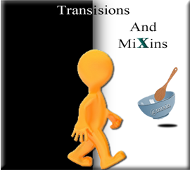
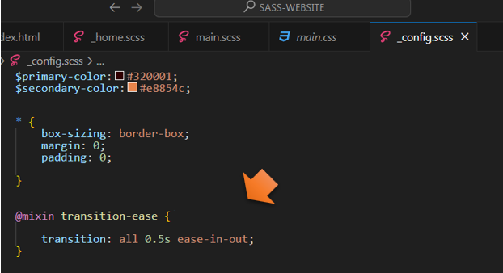
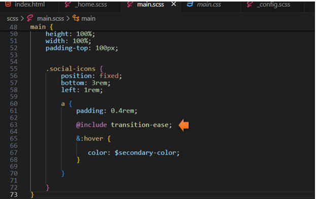

~4 Transitions and Mixins~
7/29/2024
Creating the @mixin Transition
Assigning the @mixin to be used Somewhere
Testing the Hover Color Change
You can go here to view the code.
Here we will be creating a transition to smoothly transition into the hover color change of the social icons.
The _config.scss file
We will be creating the @mixin inside of the _config.scss file. So, open that file.
When we write out this rule, we will be setting it to all. This will allow us to reuse this transition. We could just set it to color, or position or something specific. But since we want to be able to reuse this transition, we will set it to all.
Transition is the property, notice that we only use spaces to separate the three attributes of the Transition rule; what we want to target: how long we want it to take: and the specific transaction we want to use.
You can go here to W3schools learn more about transition
Creating the @mixin Transition
This transition will make our social icons slow down and smoothly transition to the desired set color, when we hover over each icon.
Look at what is inside of the @mixin code block. The property of transition, is put behind a colon wall. And, what you want to set the property’s attributes to represent, is set behind a semi-colon wall. Then you are just wrapping the entire thing all up in curly braces.
Ok, so the above was just a type of memory technique, to reinforce what is going on in the code below.
@mixin transition-ease {
transition: all 0.5s ease-in-out;
}

Assigning the @mixin to be used Somewhere
The main.scss file
In order to use our new @mixin, we need to @include it somewhere. Here we want to target the hover, on our social icons, which are inside of the .main rule.
@include transition-ease;
You will want to write this @include code inside of your social icons rule, as shown below.

Testing the Hover Color Change
Now when you hover over your icons, you will notice that the hover-color changes slowly, it eases the transition of the color change.
You can go here to view the code.